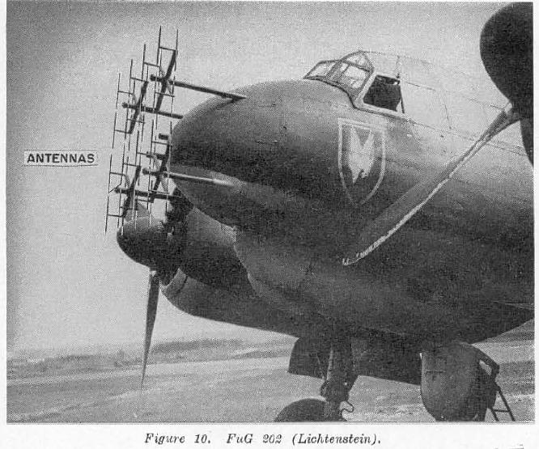
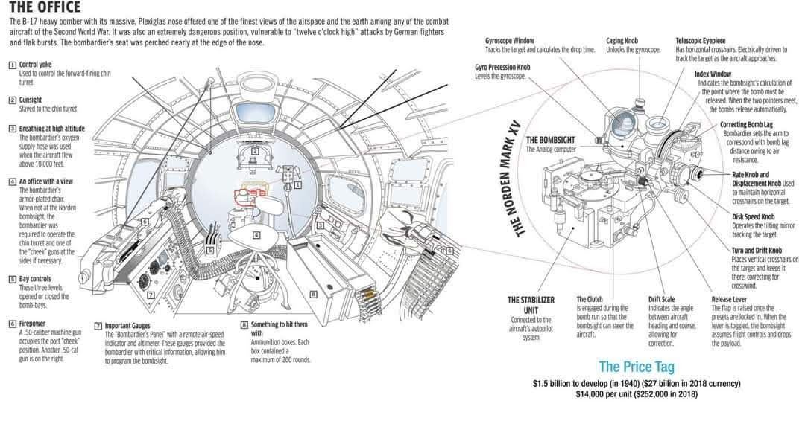
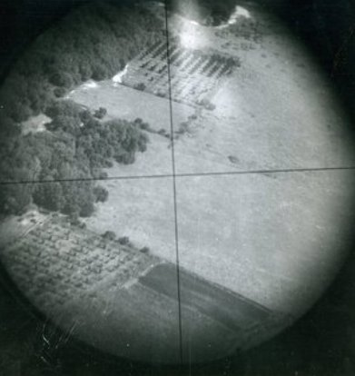
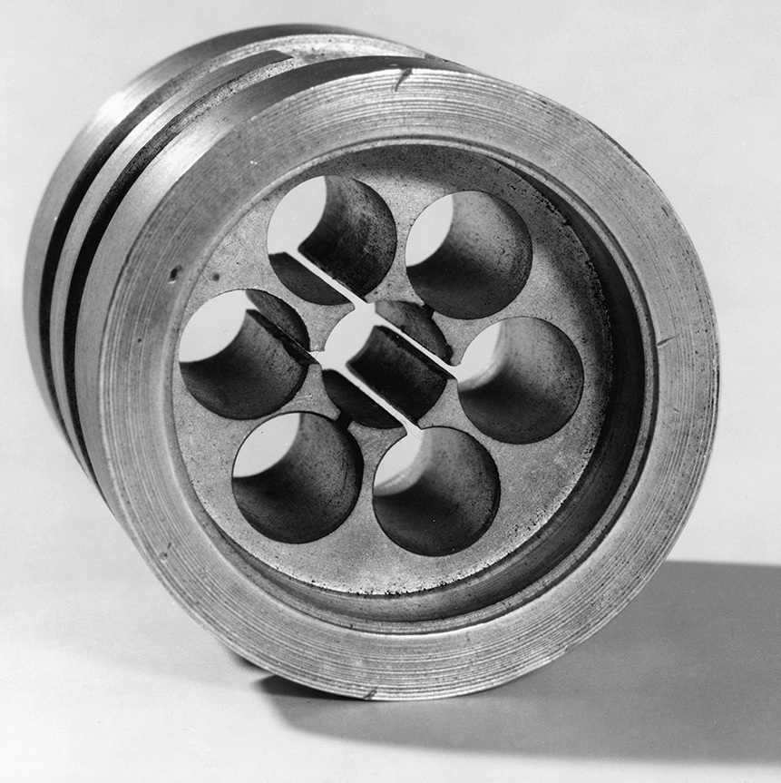
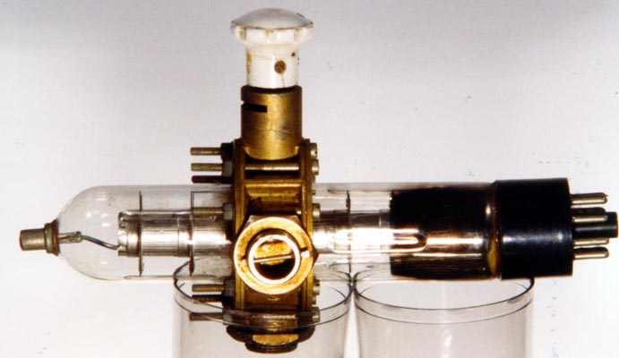
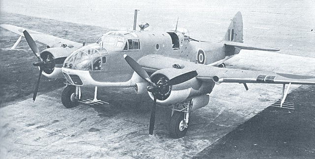

레이더 개발 이야기 (41) - 죽 쒀서 괴링 줄 일 있냐?
게시: 2023-08-03T06:30:48+09:00
<날개가 있는 것은 추락한다> H2S 레이더의 성능과 효용성에 대해서는 아무도 토를 달지 않았음. 하지만 이걸 폭격기에 달아 독일로 보내는 것에 대해서는 격렬한 논쟁이 벌어졌음. 이유는 폭격기가 하는 일은 2가지, 하나는 폭탄을 투하하는 것이고 다른 하나는 고사포든 적 전투기든 적의 방공망에 걸려 적지에 추락하는 것이기 때문. 전파 항법 장치 Gee 수신기를 장착한 폭격기들이 독일에서 격추되었고, 거기서 수거된 Gee 수신기들을 독일이 수리하여 역이용하고 있는 상황이다보니, H2S 레이더를 장착한 폭격기를 독일에 보내면 똑같은 일이 벌어지지나 않을까 염려했던 것. 특히나 문제가 되었던 것은 H2S에는 Gee에 없는 매우 중요한 물건이 달려 있었다는 점. 바로 cavity magnetron. 강력한 고주파 microwave를 쉽게 만들어내는 장치인 캐버티 마그네트론은 정말 전쟁의 향방을 결정지을 수 있을 정도의 발명품이었는데, 독일에도 물리학자들이 많으니 이 물건을 보기만 하면 이게 무슨 원리인지 이해하고 복제품을 만드는 것이 어렵지 않을 것. 더욱 큰 문제는 독일이 H2S와 거기에 달린 캐버티 마그네트론을 손에 넣었을 때의 결과가 Gee 수신기와는 차원이 달랐다는 것. 독일이 Gee 수신기를 손에 넣어서 곤란했던 것은 루프트바페가 영국의 Gee 신호를 영국 폭격에 역이용했다는 정도. 그러나 H2S가 루프트바페 손에 들어가면 2가지 문제가 생겼는데, 둘 다 치명적인 문제. 1) H2S의 레이더파를 독일 야간 전투기들이 그 발신원을 역추적하여 로열 에어포스 폭격기를 격추하는 것이 가능 2) 독일이 캐버티 마그네트론을 이용하여 자체적인 공대공 레이더를 만든 뒤 그걸 야간 전투기에 탑재하면, 로열 에어포스 폭격기들을 쉽게 추적하여 격추하는 것이 가능. 이런 일이 일어나면 로열 에어포스가 공대지 레이더나 전파 항법 등 온갖 장치를 만들어 야간 폭격하는 이유가 깡그리 사라짐. 따라서 로열 에어포스 내에서 H2S 레이더를 독일로 폭격을 나가는 폭격기에 장착할지 말지 여부에 대해 격렬한 논쟁이 벌어진 것이 무리가 아님.

(루프트바페의 야간 전투기 콧잔등에 붙은 저 Yagi 안테나는 Matratze(독일어로 침대 매트리스라는 뜻) 안테나라고 불렸는데, 당시 독일의 Lichtenstein 레이더 수준에서는 최선을 다한 것. 리히텐슈타인 레이더 시스템은 그래도 490 MHz, 즉 61cm 파장의 전파를 사용했는데, 총 32개의 안테나 요소를 사용해야 했고, 이것들은 8개 1조로 4개의 지지대에 달려 있었음. 저런 것을 달고 날면 당연히 느리고 둔해짐.) <대책이 있어야 할 거 아냐?> 연합군의 폭격기 탑재 장비 중에는 이처럼 적의 손에 넘어가서는 절대 안된다고 전전긍긍하던 물건이 또 있었는데, 바로 미육군 항공대(USAAF)가 자랑하던 폭격 조준경인 Norden Bomb Sight. 미군은 이 조준경 개발에 거의 맨해턴 프로젝트 비용에 육박하는 비용을 들였을 정도로 열을 올렸고, 영국이 캐버티 마그네트론 등의 극비 방위산업 기술을 미국에게 다 공개하고 미국도 자기 기술을 영국에 공개하는 와중에도 이 조준경 기술만은 영국에게 제공하지 않았을 정도. 미육군 항공대는 폭격기가 추락하더라도 이 물건이 독일군 손에 들어가지 않도록 폭격수(bombardier)에게 유사시 탈출하기 전에 반드시 이 조준경을 파괴하도록 자폭장치를 갖춰줌. 뿐만 아니라 그렇게 중요한 임무를 부사관에게 맡겨서는 안 된다고 생각하고는 전통적으로 부사관(NCO)이 맡던 보직인 폭격수를 일괄적으로 장교로 임관시킴.

(B-17에 탑재되었던 이 Norden bombsight는 비행기의 고도와 속도 뿐만 아니라 바람의 방향까지 고려하여 정확한 투하 시점을 계산해주는 일종의 아날로그 컴퓨터였고 투하 코스에 들어가면 폭격기의 좌우 drift를 자동 제어해주는 자동 항법 장치까지 달려 있었음. 그러나 실전 상황에서의 폭격 정확도는 꽤 실망스러움. 1943년 평균 공산오차 (circular error probable, CEP)는 370m로서, 뜻하는 바는 투하한 폭탄의 절반은 목표물의 370m 밖에 떨어졌다는 것. 이건 로열 에어포스나 루프트바페의 주간 폭격 솜씨와 별 차이가 없는 수준. 참고로 당시 많이 쓰이던 500파운드 짜리 폭탄의 살상 반경은 개활지에 서있는 사람을 대상으로 할 때는 약 100m, 건물을 대상으로 할 때는 약 30m.)

(노던 폭격 조준경의 십자선. 영국 시골의 훈련장에서 촬영한 모습.) 하지만 복잡하고 정교한 광학기계장치인 노든 밤 사이트와는 달리 H2S의 핵심 장치인 캐버티 마그네트론은 그냥 구멍을 깎아놓은 구리 덩어리. 이걸 효과적으로 파괴할 방법이 마땅치 않았음.

(1940년의 초기 마그네트론 모델. 이걸 어떻게 부순다고??) 이 문제에 대해 솔루션을 제공한 것이 처칠의 수석 과학 고문이자 H2S라는 이름의 의도치 않은 원인 제공자였던 Cherwell 경. 그는 H2S를 폭격기에 장착하되 전자파 공명기로 캐버티 마그네트론 말고 klystron을 사용하도록 제안. 1937년 미국 스탠포드 대학의 베리언 형제들(Russell/ Sigurd Varian) 형제들이 발명한 클라이스트론은 캐버티 마그네트론과 엇비슷한 원리의 전자파 공명장치인데, 캐버티 마그네트론에 비하면 성능이 크게 떨어졌을 뿐만 아니라 유리와 얇은 금속판으로 이루어진 장치. 따라서 폭격기가 격추될 때 이 클라이스트론은 박살이 날 가능성이 매우 높았음. 무엇보다 클라이스트론에 대한 논문은 미국이 전쟁에 참전하기 훨씬 전인 1939년 이미 국제적으로 발간되었으므로 이미 독일에서 사용 중이었고, 실제로 독일 레이더는 클라이스트론을 주요 부품으로 활용하고 있었음.

(이건 10cm 단파를 만들어내던 CV67 Klystron. 저 유리관의 직경은 3cm. 1941년 제품.) 그러나 로열 에어포스 레이더 연구팀은 처웰 경의 지시에 대해 강력 반발. 클라이스트론에서 만들어내는 전파의 강도는 캐버티 마그네트론에 비해 4~5%에 불과했기 때문. 실제로 클라이스트론을 소재로 사용한 H2S는 불과 16km 전방의 마을도 간신히 구분해냈지만 캐버티 마그네트론을 사용한 H2S는 56km 떨어진 마을도 잘 포착. H2S는 깜깜한 밤중에도 폭격기 조종사들이 지도를 보고 항로를 찾을 수 있도록 하는 것이 목적이었으므로 클라이스트론처럼 탐지 거리가 10~15km 수준이어서는 사용이 거의 무의미한 수준. 로열 에어포스의 레이더 연구팀은 죽으나 사나 캐버티 마그네트론을 사용한 H2S를 고집했고, 적의 손에 들어가면 어떻게 할 것이냐는 질문에 대해서는 다음과 같은 2가지 반박으로 대응. 1) 캐버티 마그네트론을 독일 기술자들이 손에 넣는다고 해도 그걸로 제대로 된 공대공 레이더를 만드는데는 2년 정도가 걸릴 것 2) 독일 애들도 바보가 아니니 이미 비슷한 수준의 전파 공명기를 연구하고 있을 것 사실 1번과 2번은 완전히 상반된 내용이지만 아무튼 결국 캐버티 마그네트론을 이용한 H2S의 폭격기 장착이 결정됨. 이런 결정의 배경은 로열 에어포스 폭격기 조종사들이 밤눈이 어두워 독일 도시로 가는 길을 못찾는 문제가 심각한 수준이었기 때문이기도 하지만, 로열 에어포스 내 폭격기 사령부(Bomber Command)의 정치적 위상을 보여주는 것이기도 함. 그게 뭔 소리인고 하면, H2S를 가장 절실히 필요로 했던 곳은 사실 독일로 가는 폭격기가 아니라 망망대해에서 U-boat를 찾아다니던 로열 에어포스 내 연안 방어 사령부 (Coastal Command) 소속 해양 초계기들 (maritime patrol aircraft, MPA). 원래 전쟁은 총이 아니라 보급으로 하는 것이므로, 당시 WW2 승패는 독일에 몇 발의 폭탄을 던지느냐가 아니라, 미국에서 군수물자를 얼마나 빨리 얼마나 많이 실어오느냐에 달려 있었고 따라서 그걸 방해하는 U-boat 사냥이 무척이나 중요했음. 특히 당시 폭격기들이 길을 제대로 찾는다고 해도 어차피 폭탄 명중률이 형편 없었다는 점을 생각하면 더욱 그랬음.

(로열 에어포스의 해양 초계기 Bristol Beaufort. 아직 캐버티 마그네트론을 이용한 ASV Mk III 공대함 레이더를 장착하지 못한 상태라서, 이전 버전인 ASV MK II의 지저분한 Yagi 안테나를 코 아래와 날개 아래에 덕지덕지 붙인 모습. 저런 야기 안테나는 성능도 문제였지만 무거울 뿐만 아니라 공기 저항이 심해서 초계기의 작전 역량을 크게 떨어뜨렸음.) 게다가 해양 초계기에 H2S의 해상용 버전인 ASV Mk III를 더 우선적으로 공급해야 할 이유가 분명했음. 폭격기는 격추되면 적지에 떨어지는 거고, 따라서 H2S와 소중한 캐버티 마그네트론이 독일군 손에 들어갈 확률이 컸지만, 해양 초계기는 떨어져도 망망대해에 떨어지므로 그게 독일군 손에 들어갈 확률은 0에 수렴했음. 그럼에도 불구하고... 우선권은 폭격기들이 가져갔음. 이유는 다들 짐작하시다시피 독일 도시들을 불태우는 폭격기에 대한 정치적 의의 덕분. 생각해보면 전쟁이란 그냥 정치의 연장에 불과하니 그게 당연한 것일 수도. 그렇게 큰 소리 뻥뻥 치면서 실전 폭격에 투입하면서도 로열 에어포스는 H2S가 독일군 손에 들어가지 않기를 두 손 모아 기도. 그러나... 현실은 냉혹. 그 이야기는 다음 편에.